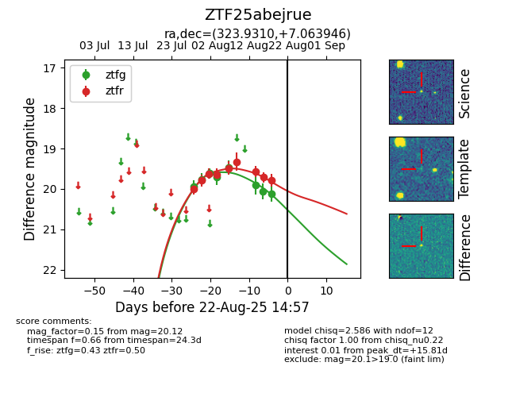

Target ZTF25abejrue at 2025-08-22 15:21, see:
FINK: fink-portal.org/ZTF25abejrue
Lasair: lasair-ztf.lsst.ac.uk/objects/ZTF25abejrue
ALeRCE: alerce.online/object/ZTF25abejrue
alt names
ZTF25abejrue (ztf,alerce)
coordinates:
equatorial (ra, dec) = (323.9310,+7.06395)
galactic (l, b) = (61.4635,-31.61500)
photometry
last atlaso=20.13, ztfg=20.12, ztfr=19.78
2 atlaso, 8 ztfg, 9 ztfr detections
